也紀念我們永遠的朋友 李士傑先生（Shih-Chieh Ilya Li）。
輕巧帶著走的燒錄軟體 - InfraRecorder
◎ InfraRecorder 介紹
燒錄軟體幾乎是每台個人電腦必裝的軟體之一，市面上有相當多選擇，有包山包海的全功能燒錄軟體，如 ：Nero、有主打映像檔製作與燒錄的 Alcohol 120% 和 ImgBurn、有專攻光碟拷貝的 CloneDVD ，這些軟體有的為商業軟體，有的為免費軟體，有的為分享軟體，一般使用者面對這麼多選擇，多半一時之間拿不定主意。其實以市占率而言，應以 Nero 為最大宗，主要原因為台灣民眾在購買燒錄機時，大多會免費附贈 Essentials 版的 Nero ，一般民眾多多少少聽過或用過 Nero，但 Essentials 版的 Nero 比起完整版少了一些的功能，總讓人覺得有些缺憾。
在此介紹一套開放原始碼的燒錄軟體 - InfraRecorder，它是一套同時支援 CD 與 DVD 燒錄的燒錄軟體，比起 Nero 9 Essentials 安裝檔案動輒 50MB ，InfraRecorder 的 3.19 MB 顯得小巧許多，加上 InfraRecorder 的可攜版本 〈Portable〉 ，讓你帶著 USB 隨身碟，在其他電腦也可以燒錄光碟。這麼小的檔案容量，會不會讓你懷疑他的功能不足，事實上，InfraRecorder 功能相當完整，根據官網介紹與個人使用經驗，以下列出 InfraRecorder 各項功能與特色：
* 可燒錄資料光碟、影音光碟、混合光碟
* 有繁體中文介面
* 支援 Unicode，顯示多國語言
* 可製作與燒錄光碟映像檔 〈iso 和 cue/bin〉
* 擷取音樂 CD 為檔案〈.wav, .wma, .ogg, .mp3 和 .iso〉
* 支援 DVD 雙層燒錄〈dual-layer〉
* 支援多種可複寫光碟的抹除功能
軟體名稱 InfraRecorder
最新版本 0.46.2
軟體授權 GNU General Public License 〈GPL〉
系統支援 Windows 2000/XP/2003/Vista
官方網站 https://infrarecorder.org/
◎ 如何製作資料光碟，將檔案燒錄成光碟
製作資料光碟是 InfraRecorder 常用功能之一，由於個人電腦的硬碟空間有限，當空間快不夠用時，得將電腦上重要的資料備份至光碟中，資料光碟的製作相當簡單，以下將一步步示範燒錄流程：
【步驟一】 開啟軟體後，會出現燒錄精靈的操作介面，請選擇製作資料光碟功能，點選 Data Disc 〈資料光碟〉，點選大圖示預設為製作 CD 光碟，若你要燒錄 DVD，請點選圖示旁的 DVD 字樣。
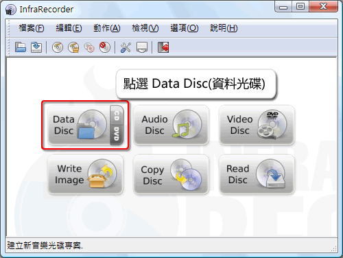
【步驟二】進入畫面後，可看到類似檔案總管的操作介面，介面上方可瀏覽要備份的檔案，將要燒錄的檔案或目錄拖曳到下方的「光碟內容」視窗。
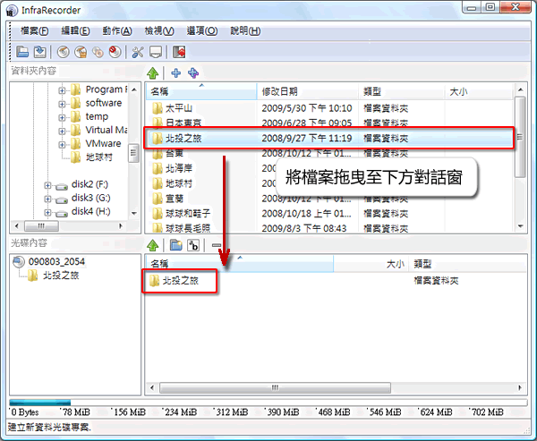
【步驟三】根據燒錄內容你還可以變更光碟細部屬性，於光碟上點選滑鼠右鍵，點選屬性。在此你可以變更光碟名稱、檔案系統、說明欄位，甚至可以加入開機映像檔，讓此光碟可以開機。但若你只是一般資料燒錄，可保留原設定值。
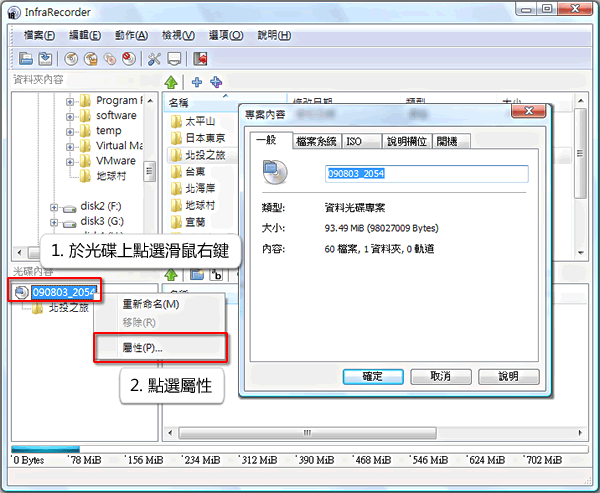
【步驟四】準備好後即可開始燒錄，點選「動作」→「燒錄專案」→「至空白光碟」。
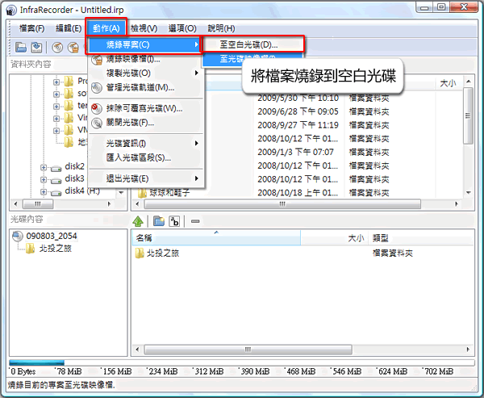
【步驟五】燒錄清單中可選擇燒錄時的進階設定，一般使用者可直接點選「確定」開始燒錄。
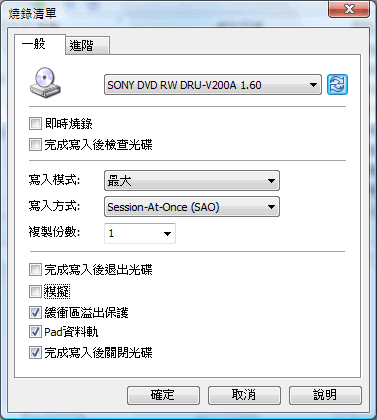
【步驟六】接下來只要等待燒錄完成即可。
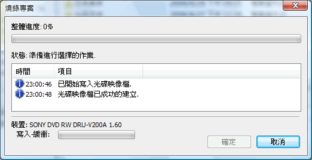
◎ 如何製作映像檔，將光碟製作成 ISO 檔
使用光碟燒錄備份資料有一些隱藏的危機，光碟有使用壽命的問題，隨著近年來光碟品質逐年下降，有些光碟片燒錄後兩三年就無法讀取，故現在越來越多人傾向將光碟製作成映像檔，它能把一張光碟片裡的所有資料，以檔案的方式儲存在硬碟中，不僅管理方便，還可利用掛載軟體將檔案掛載至虛擬光碟，就像有一片真的光碟放置於光碟機中。
常見的映像檔格式有 *.iso 或 *.cue 等，各大品牌的燒錄軟體也有自己規格的映像檔格式，如 Nero 的 *.nrg 或 Alcohol 120% 的 *.mds 等等。然而，各大廠的自有格式使用上不如 *.iso 檔自由，一般使用者還是喜歡使用 *.iso，不僅可直接用 7-zip 開啟，而且絕大部分的掛載軟體都會支援 *.iso 檔。
目前為止，使用者已經可從 Nero 的官網免費下載 Nero 9 Essentials，或使用隨機附贈的版本，但這些免費版的 Nero 有一個令人詬病的缺點，就是無法製作 *.iso 映像檔，它只提供 *.nrg 的格式，對於會將檔案與朋友分享的使用者而言，*.nrg 不像 *.iso 那麼方便支援大部份掛載軟體，若只因此去購買完整版的 Nero 則又要花一筆錢，因此在這邊介紹一個免費的解決方案，教大家利用 InfraRecorder 製作光碟映像檔。
【步驟一】 將要燒錄的光碟放入光碟機中。
【步驟二】 開啟 InfraRecorder，點選「動作」→「複製光碟」→「至光碟映像檔」。
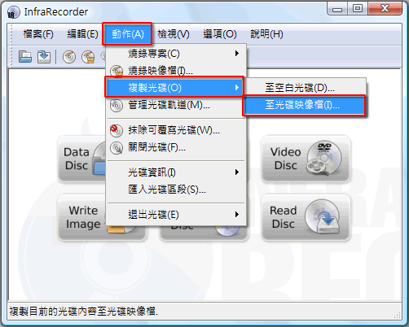
【步驟三】先選擇你要備份的來源光碟，再點選映像檔案，選擇要存放的位置與檔案名稱。
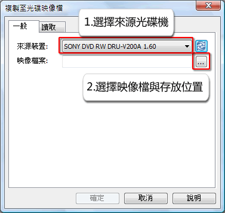
【步驟四】選擇要存放的位置並輸入檔案名稱。完成後即可在「複製光碟映像檔」視窗點選確認。
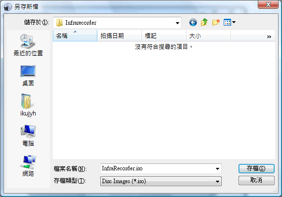
【步驟五】等待映像檔建立完成。
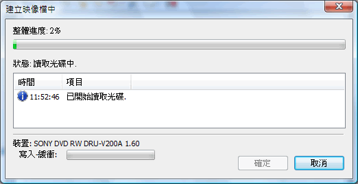
同場加映：如何掛載映像檔
所謂的「掛載」：意即將映像檔 *.iso 掛載成「虛擬光碟機」，讓使用者可直接讀取映像檔中的內容，就像真的光碟一樣。市面上有許多有掛載功能軟體，如商業軟體 〈Nero 9，Alcohol 120%〉，或免費軟體 〈Daemon tool Lite〉等都可以掛載映像檔。 在此介紹一套開放原始碼軟體，WinCDEmu，以下介紹其使用方式的方式。
【步驟一】下載並安裝 WinCDEmu。
以下為官方網站提供下載網址。
【步驟二】掛載映像檔
開啟檔案總管，只要雙點擊(double-click)剛製作的映像檔，系統會提示發現新硬體，依提示點選下一步，即可把映像檔變成光碟機。
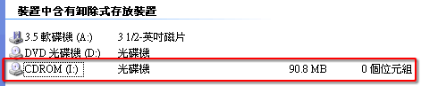
【步驟三】此時檢查裝置管理員可發現光碟機中多了一台虛擬光碟機。
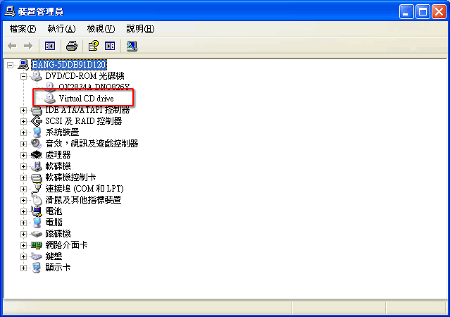
【步驟四】點選退出即可移除虛擬光碟機。
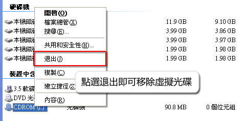
◎ InfraRecorder 的冒煙特效
InfraRecorder 有一個有趣的特效，在燒錄光碟時，對話窗會像著火似的冒出煙來，但要出現這個的特效有幾個條件，以下教大家如何開啟這個特效。首先這個特效只能用在於 Vista 的 Aero 佈景主題 〈其實就是預設 Vista 佈景〉，第二：必須安裝 DirectX，使用者可至微軟官網下載。第三：開啟特效設定，點選 「選項」→「設定」→「進階」，勾選 「啟動煙霧效果」。
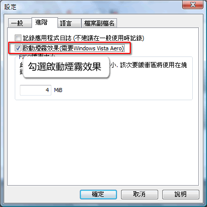
完成後，即可在燒錄階段看見會冒煙的對話窗，若想測試特效，可點選「模擬」燒錄，一樣會有冒煙特效，以下為冒煙特效的影片。
E-Mail：contact@openfoundry.org Address：台北市南港區研究院路2段128號 中央研究院資訊科學研究所 . 隱私權條款. 使用條款

評論